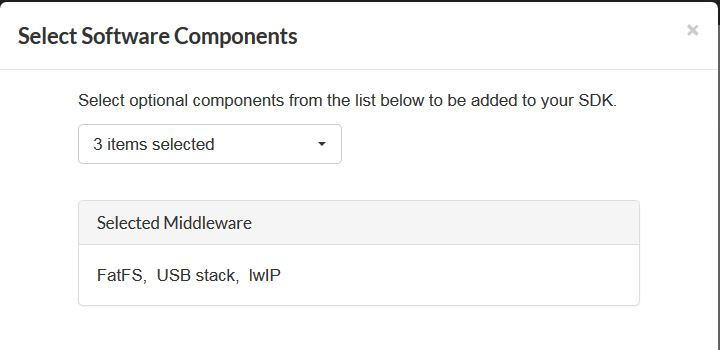
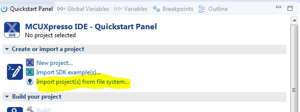
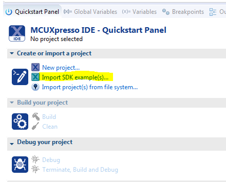
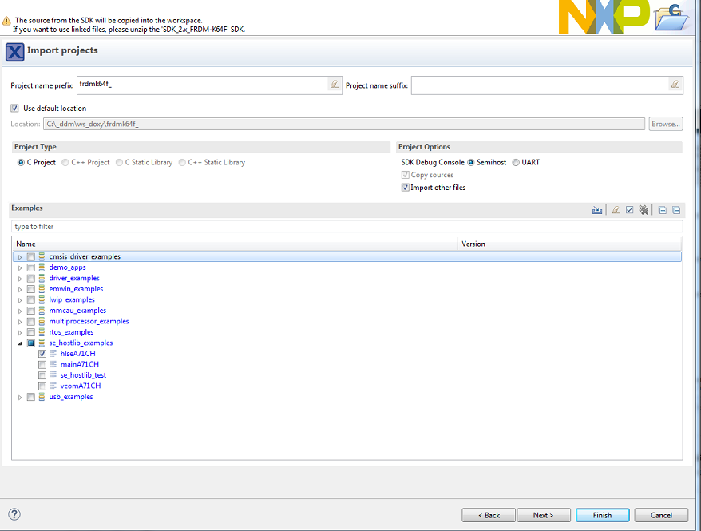
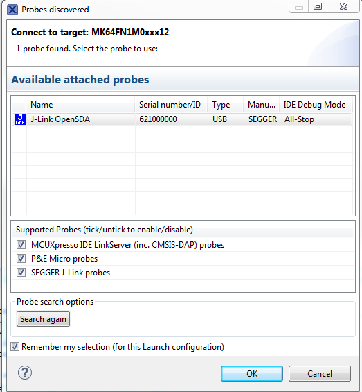
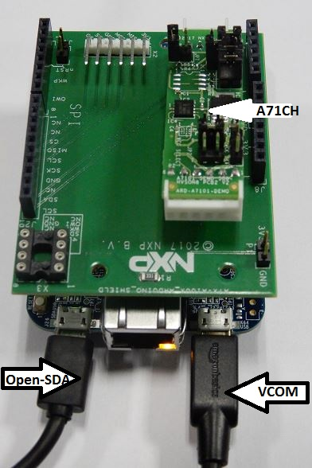

Introduction
The se_hostlib_examples demonstrate the usage of secure module functionality in combination with host library and MBEDTLS cryptographic library.
- A71CHMain demonstrates the usage of various functionalities of the secure module in combination with MBEDTLS cryptographic library.
- vcomA71CH allows the Kinetis FRDM-K64F/FRDM-K82F boards to be used as a bridge between the PC and the secure module and enables the execution of the config tool and other utilities from the PC
Steps to execute the project on the Kinetis board
Create and install MCUXpresso SDK
- Login/create an account on the SDKBuilder website https://mcuxpresso.nxp.com/en/select .
- Select your Board i.e. FRDM-K64F.
- Click on Build MCUXpresso SDK.
- Select Software Components.

Default Software Components
- Note
- Default middleware components are sufficient when using the MCUXpresso project files distributed with this release
-
It is anticipated that - starting late 2018Q2 - the A71CH middleware can be downloaded with the 'Build MCUXpresso SDK' tool. Please also select the A71CH middleware, once it is available.
- Download the SDK
- In MCUXpresso IDE, install the downloaded SDK by dragging and dropping it into the Installed SDK's tab.
Create and install MCUXpresso SDK
- login/ create an account on the SDKBuilder website https://mcuxpresso.nxp.com/en/select .
- Select your Board i.e. FRDM-K64F.
- Click on Build MCUXpresso SDK.
- Select Software Components.
Default Software Components
- Note
- Default middleware components are sufficient.
- Download the SDK
- In MCUXpresso IDE, install the downloaded SDK by dragging and dropping it into the Installed SDK's tab.
Importing the project.
Depending on whether you are using the installer package or SDK package, Please follow one of the below methods to import the project.
Importing the project from local drive (Installer Package)
- Click on Import Project from file system.

Import Project from file system
- Point to the correct project directory.
- Select the desired project(one or more).
- Note
- Deselect Copy projects into workspace.
- Click on Finish to complete importing the project.
Importing the project from SDK
- Click on Import SDK example(s) in the Quickstart Panel

Importing project from SDK
- Select the board and click on Next >
- Select the desired project from se_hostlib_examples drop down. Select Semihosting or UART to print logs on MCUXpresso console or Serial terminal(for e.g. Teraterm) respectively. If UART is selected, in
Project->Properties->C/C++ Build->Settings->MCU C Compiler->Preprocessor, ensure that SDK_DEBUGCONSOLE=0 and SDK_DEBUGCONSOLE_UART is defined

Selecting the project
- Click on Finish to complete importing the project
Build and execute the project
- Click on Build to compile and generate the executables
- Click on debug to program the binary into the device
- Select J-Link OpenSDA and click on OK. For more details on OpenSDA, refer to OpenSDA Installation/Update

Selecting the debugger
- Click on the Resume button to start program execution
Logging on console
For UART, a serial terminal application(for e.g Tera Term) on PC for VCOM serial device needs to be configured as follows
- 115200 baud rate
- 8 data bits
- No parity
- One stop bit
- No flow control
Once the program execution begins, logs are printed on the terminal(e.g. Tera Term) indicating the status of execution and test results. The ATR and the various module versions are printed followed by a SELECT-DONE after which the respective test logs are printed.
A picture of FRDM-K64F Connected to A71CH

A71CH connected to FRDM-K64F
 1.8.14
1.8.14